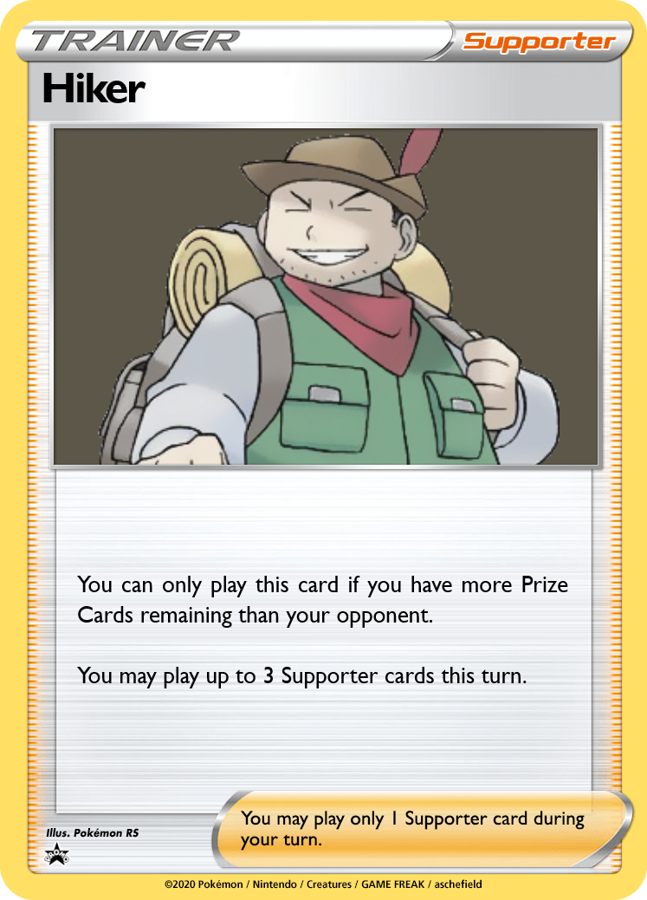
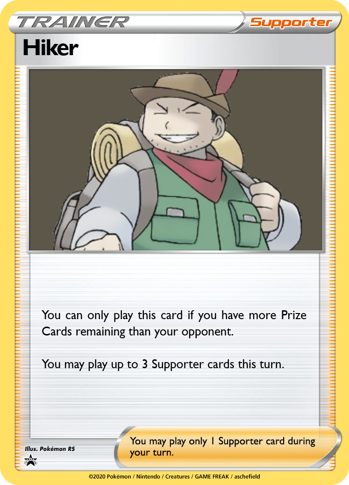

This set focuses on a wide variety of Evolution Pokémon. Not every card in a TCG can be equally viable; but whether they have a unique ability or a powerful attack, I want every fully evolved card to have something interesting about it. If we were to port these cards to 1999 and a kid opened a booster pack, the Rare slot should make them thing "Wow, that's cool! I can do something with this!"
My initial draft also gave all 3 birds a 2-cost attack that dealt 20 damage + 10 to all benched Pokémon. However, as I thought about the role I wanted these cards to play, giving them a generic value attack felt wrong. We want to make sure Big Basics don't dwarf everything else in the format, yet at the same time, Legendary Pokémon rightfully should have a big impact.
How do we solve this? All 3 have abilities with the potential for immediate value as they come into play, alongside a powerful high-cost attack.


Bellsprout and Weepinbell have effects inspired by Strike and Run Dunsparce. Even though neither is quite as good, you can more consistently find your starters or bench a Pokémon with free retreat to act as a wall for a turn before switching in your primary attacker.
Victreebel is the main allure of the line, with Trap Spore being able to inflict any Status Condition. Paralysis is going to be the choice in most cases, but Burn and Poison can help pick up a KO. Putting on status conditions can force the opponent to switch, which Victreeebel punishes with Honeypot!


The Diglett line have some of the lowest base HP values in the game. As one of my design goals is to keep the "feel" of many Pokémon in tact, these values have not been artificially buffed. With an evolution line focused on Speed and Attack, both have no retreat, and both deal damage well above curve for their Energy costs. Diglett features a more defensive ability that offers immunity from gusting, damage counters, and snipe damage. Dugtrio goes full glass cannon, damaging the opponent with Burrow Trap whenever the opponent switches out. With Honeypot and Burrow Trap in effect, the total damage from a Switch can go up to 100!


Golem's Earthquake is less powerful than Dugtrio's, but it is easier to use. If you can take one Knock Out with Earthquake, your damaged Golem can then explode for what's likely a 2nd prize. Rolling Stone also makes Golem a useful support Pokémon.


While not quite Earthquake, Dewgong is certainly a Pokémon with a focus on bench damage. Triple Twirl is inspired by UNB 45. Triple Twirl can come out turn 2 with DCE or Double Rainbow, but you'll have to discard it afterwards.


The main issue with Rage attacks is keeping your Pokémon sufficiently damaged. Primeape's Afterlife Riot allows you to keep any extra damage counters. For example, if a 10HP Primeape takes 30 damage, you'll be able to move 2 damage counters to other Pokémon, instantly turning Rage into a decent 30 or 40-for-1 attack. Keeping your Pokémon damaged makes them easier to OHKO, but you can gain an advantage over the course of the game by using cost-efficient attacks (Rage only costs 1 Energy, after all).
Tauros' Raging Herd can deal up to 80 damage for a single DCE, but it takes some work to set up and requires that none of your Tauros have been prized. A free retreat cost makes it easier for your damaged Tauros to avoid Knock Outs.
The Alakazam line also supports Rage strategies by allowing free manipulation of damage counters. It only has 70hp, but Psyshock can deal over 100 damage if you've tanked a few hits with Damage Swap first. Kadabra has no attacks, but 4 unique effects on Spoon Trick, making it a support Pokémon that can fit into a variety of decks.


Machop has an HP buff, further cementing it as the "Hitmonchan at home."
Machoke's Daunting Pose ability gets imported. This offers a countermeasure against the Earthquake decks discussed above. It can work in any deck, but it's an interesting interaction with Rage; bench sniping will increase the damage from Rage, but as you want low HP to get maximum value from Rage, the decks may also be most vulnerable to it.
Machamp has Fissure, a nerfed import of Take Out (Stormfront #40). Even the mighty Legendary Birds and other high-hp Pokémon ex will be Knocked Out in one hit. I've also included Rage over Seismic Toss for flavor reasons; Machamp is all about taking a hit and retaliating harder!


Slowpoke has an attack similar to Wigglytuff's original Do the Wave, but it only counts Pokémon with Withdraw. Slowpoke probably won't end up using it though, as Slowbro can copy the attack for no Energy! You'll also need to manage your bench properly; Shellder can search for Slowbro, but discards itself from play, reducing the number of Pokémon with Withdraw in play. Additionally, if you want to maximize damage from Shell Smasher, you can't have any support Pokémon like Persian or Pidgeot on your bench.


With most Pokémon having 1-2 Retreat, a single Tentacruel is hitting 40 or 60 for 2, with the potential to scale higher with additional copies set up. However, players can counteract this with Dodrio and its Retreat Aid ability! Doduo is an extremely rare case: I've changed no attributes of this card compared to the original Base Set. Dodrio, however, has a nifty new attack. By gusting the opponent, we dodge abilities that prevent benched damage (e.g. Squirtle, Machoke) and can potentially strand an Active Pokémon--especially if paired with Tentacruel to increase the Retreat Cost! Lastly, switching out Dodrio after the attack allows us to switch in Pokémon like Charizard, Venomoth, or Machamp, which punish the opponent for attacking into them.


All 3 members of this line have low HP for their Stage. To balance this out, I've given them a focus on cheating Pokémon into play; you never know when a ghost might appear! Gastly and Haunter both accelerate Stage 1 Pokémon into play, while Gengar deals damage based on the number of Evolution Pokémon you've discarded. Players can use Haunter's In Memorium to set up copies of Kadabra or Hypno without running any Abra or Drowzee. Avoiding the need to evolve Pokémon lets players aggressively use cards like Professor Oak and Computer Search to power up Gengar's attack. And, once one Gengar is set up, you can start chaining a new Gengar each turn.


Pokémon are, on average, a fair deal bigger than the original Base format (e.g. the 3 Legendary Birds). To accomodate this, Big Eggplosion has been buffed from 20x to 30x, and Exeggcute has an attack that fits the theme of accumulating Energy. Note that Blastoise ex's Rain Dance has no type limitation, so Exeggutor is a potential recipient for your [W] Energy!


Both of these lines have parallels to Fresh Beginning's Scyther. Ponyta exchanges Swords Dance and a bit of HP for a small support ability, which can be reused by returning it to the hand with Scoop Up or Mr. Fuji. This works especially well when considering Rapidash's attack!
Paras is strictly worse than Scyther, but Parasect now rewards players for the investment additional damage alongside a chance to inflict Sleep. Bedhead Parasite works with other sources of sleep as well, such as Victreebel. The high retreat cost makes this line searchable by Poké Maniac.


The original Drowzee card focused on Confusion(???) instead of Sleep, so this has been corrected. Dream Eater deals big damage, but it's unlikely to work without support from Parasect. Hypno is a natural partner for any deck that relies on low-HP attackers. Your 40-HP Dugtrios and 70-HP Alakazams now gain a 100-hp shield, which also prevents them from losing Energy when the shield gets Knocked Out.


Marowak's ability will seem suspiciously similar to Buzzap Electrode, but I wanted to take that line in another direction. I still wanted the ability in the format, and Marowak seemed like a fitting choice, essentially turning itself into a ghost to support your team. Revenge Punch is also a good late-game attack, hitting as high as 70-for-1.


Red Thread Cut is a situational attack that KOs any Pokémon weaker than Kingler. With 70HP, a healthy Kingler can Knock Out most evolving basics, and even some Stage 1s. Unlike Machamp's Fissure, Kingler will struggle to deal with high-hp basic EXes, but Kingler can be a great secondary attacker, essentially dealing up to 60 for 2 against weakened opponents.


Credit: Lure's redesign came from discord user "adam karl (ptcgo adam_bromma)#5571"
The Nine Tails attack is a bit of a gimmick, but it does have an average damage on par with Arcanine's Flamethrower. This attack is inspired by a promo from the Game Boy TCG game.


The Seaking line is inspired by its access to the Lightning Rod ability in the video games. Pair it with Lightning Pokémon like Electabuzz.


The original Muk's Toxic Gas ability is controversial, but Ability Lock is the card's legacy, which I wanted to keep in tact. By placing it on an attack, players now need to commit to it, and Muk leaves itself vulnerable.


Pokémon Center now requires Energy to be attached to the Pokémon it heals, preventing a full board clean with Damage Swap. Recycle provides a way to get resources back in the deck. Pokédex Quiz is inspired by the Blaine's Quiz series, focusing on Pokémon attacks. Earthquake, Withdraw, Agility, and Water Gun are a few attacks that can be found on multiple Pokémon.


Cue Ball, Gambler, and Black Belt are support for Rage, Eggsplosion, and Earthquake decks, respectively.


Channeler is a combeack card similar to Raihan, except it can bring a Stage 2 back right from the discard pile. Fisherman fits bets in decks like Rain Dance, bringing back energy that can immediately be accelerated into play. Poké Maniac has a few different targets, and decks running multiple high retreat Pokémon can make good use of it.
 


Ignoring the costs of item cards makes Burglar a versatile card, though it depends on the opponent's deck. Common targets could include Computer Search (no discard required) and Energy Removal (which no longer needs to discard one of your own Energy).
Rocket Makes It Double is a card designed with the intention of "let's see what happens." It does absolutely nothing on its own, but can lead to a wide variety of payoffs. Add 2 cards with Computer Search; finish the game early with Cubone's Lone Finish; put 6 cards back in your deck with Recycle. Note that you only get to replace one instance, so an attack like Goldeen's "Ride the Current" can attach 2 Energy to 1 Pokémon or 1 Energy each to 2 Pokémon, rather than accelerating 4 energy total.